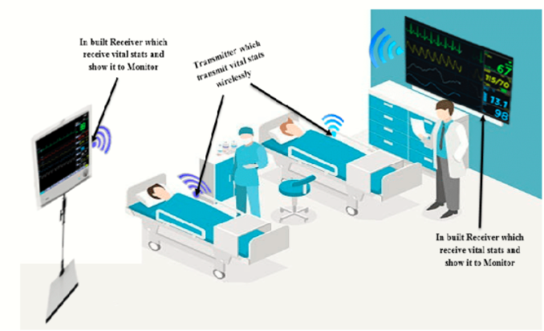

Future of Wireless Power Transfer
Content
Our Team
- Darshan S
- Rishee K
- Ritik Kumar Mehta
- Sakshi Chavan
- Sudhaharan S J
Future of Wireless Power Transmission
Wirelessly powered home appliances :-
We are now moving towards the future, where we will be having a power transmitting device inside our house which will allow us to transmit power to all the appliances present inside the house such as Television, Laptop, Lamp, Iron, Sound Box, Fridge, Mobile, etc. Transmitting devices transmit power while the appliances will receive that power through receiving devices set up inside into all appliances. That will make it easy to charge multiple devices at the same time. We don't need to stick with wires while using any electric device like mobile, laptop, camera, etc. entire elimination of wires is feasible with the aid of using WPT so the gadget turns into very consumer-pleasant, and complexity may be reduced.